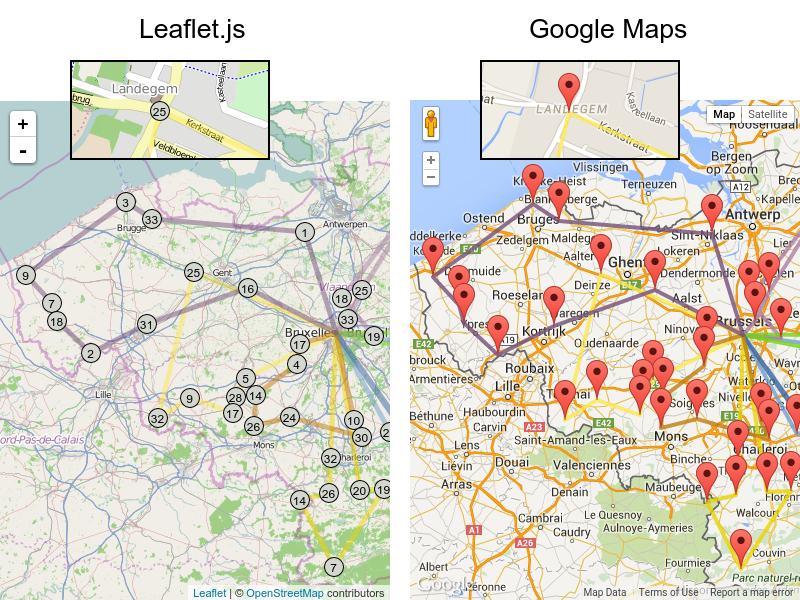
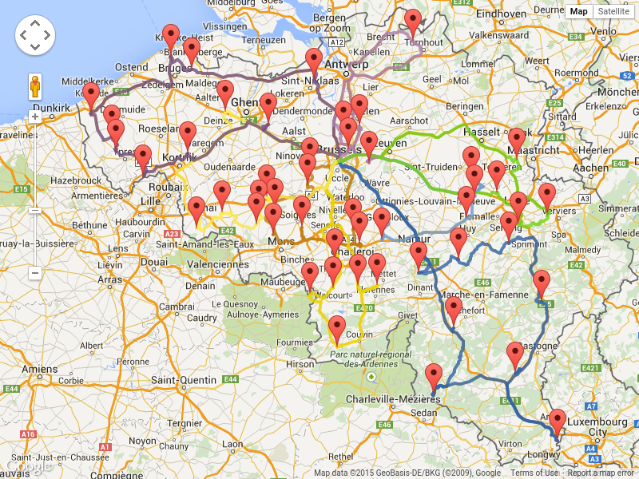

Visualizing Vehicle Routing with Leaflet and Google Maps
After OptaPlanner finds the best solution for a Vehicle Routing Problem,
users usually want to see it on a real map, such as Google Maps or OpenStreetMap.
The optaplanner-webexamples.war for OptaPlanner 6.3 now demonstrates that.
Visualization
In the case below, I’ve solved a VRP problem with 50 locations and 8 vehicles
and projected the best solution with Leaflet and Google Maps.
It’s a case of capacitated vehicle routing: each vehicle can carry 100 items
and each location needs a number of items picked up.

Despite that the lines are shown as straight between locations,
actual road distances
were used in the optimization calculations.
In total, the vehicles drive a little under 32 hours, so on average 4 hours per vehicle (includes location service time).
This solution doesn’t take into account rush hour yet, but if such traffic prediction data were available,
we can make OptaPlanner apply that too, which could result in a different best solution.
In the web UI, we can zoom in on a specific location, such as the Landegem town center,
where we need to pickup 25 items. In this solution, those items are picked up by the yellow vehicle.
The visualization was implemented in 2 different ways:
Leaflet.js
Leaflet.js is an open source JavaScript that uses OpenStreetMap data.
Google Maps
Google Maps is a proprietary JavaScript that uses Google data.
Apply it now in your case
If you’re using the latest OptaPlanner final release (6.2.0.Final at the time of writing),
you easily do such visualization too: those webexamples don’t require any API’s new in optaplanner-core 6.3,
so download the nightly snapshot and look for webexamples/sources
to see how it’s done.
Update
With Google Map Directions we can also visualize the actual roads used:
